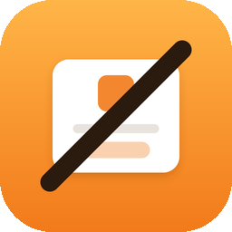

Unbanner
Stay on the web. No more “Open in App”.
留在网页里，不再被「打开 App」打扰。
Get help
Something not working, or a site Unbanner should cover? The fastest way is the button inside the extension: in Safari, open the page, tap the Unbanner icon, then “Not blocked or broken? Report this site”. It drafts an email with the page address and version info.
GitHub issues are public. Don’t post links or screenshots that contain personal information.
Turn on Unbanner
- Open Settings.
- Go to Apps → Safari.
- Tap Extensions → Unbanner, then turn on Allow Extension.
- Under Other Websites, choose Allow. Without this, Unbanner can’t work on web pages.
iOS 17 and earlier: in step 2, go to Settings → Safari.
FAQ
Why is the “Open in the … app” banner at the top of Safari still there?
When the app is installed on your device (for example YouTube, Reddit, X or Amazon), Safari shows that banner itself. It’s part of Safari, not the web page, so no extension can remove it. Unbanner removes it when the app isn’t installed, and removes the pop-ups and buttons the website adds.
Why do some links take about a second to open?
Some links (for example YouTube, X, Reddit) would otherwise jump straight into the app. Unbanner holds these links for about a second so they open in Safari instead. Links that can’t open an app, and links within the same site, open right away.
How do I know Unbanner is working?
The box at the top of this page shows how many prompts have been removed. You can also tap the Unbanner icon in Safari to see what was removed on the current page.
A website looks broken. What should I do?
In Safari, tap the Unbanner icon → “Turn off on this site”, then reload. Please send us feedback (below) with the site’s address so we can fix the rule.
Why does it ask for access to all websites? Does it read my data?
Prompts appear on many different sites, so Unbanner needs to run on them to hide those prompts. It only looks for “Open in App” prompts and links to apps. It doesn’t collect, store or send your browsing data.
Some links from search results still open the app. Why?
Search results and link-redirect pages don’t show the final address until you leave them, so Unbanner can’t tell where they lead. We’re working on it.
Why does a page show “Open this page in “…”?” or “Safari cannot open the page because the address is invalid”?
The website itself is trying to open its app. If the app is installed, Safari asks first: tap Cancel to stay on the web page. If it isn’t installed, Safari says the address is invalid: just tap OK, and the page keeps working. These messages come from Safari, and Unbanner can’t block them yet. We’re working on it.
获取帮助
哪里不好用，或者希望支持某个网站？最快的办法是用插件里的按钮：在 Safari 里打开那个网页，点 Unbanner 图标，再点「这个网站没挡住 / 坏了？反馈给我们」，会自动写好一封带网址和版本信息的邮件。
GitHub 上的 issue 是公开的，请不要贴带个人信息的链接或截图。
打开 Unbanner
- 打开「设置」。
- 进入「App」→「Safari浏览器」。
- 点「扩展」→「不弹不跳」，打开「允许扩展」。
- 在「其他网站」里选「允许」。不选的话，插件没法在网页上工作。
iOS 17 及更早：第 2 步是「设置 → Safari浏览器」。
常见问题
为什么 Safari 顶部「在“…”App 中打开」的横幅还在？
手机上装了那个 App 时（比如 B 站、小红书、YouTube、Amazon），这条横幅是 Safari 自己显示的，属于 Safari 的界面，不是网页内容，任何插件都去不掉。没装那个 App 时，插件能去掉它；网站自己做的弹窗和按钮，插件都会去掉。
为什么有的链接要等一秒左右才打开？
有些链接（比如 B 站、小红书、YouTube）一点就会直接跳进 App。插件会把这类链接先拦下、等一秒左右再打开，这样就留在 Safari 里。不会跳 App 的链接、同一个网站里的链接，都会立刻打开。
怎么知道插件在工作？
这一页最上面会显示累计去掉了多少个提示。也可以在 Safari 里点「不弹不跳」图标，看当前网页去掉了什么。
某个网站显示不正常怎么办？
在 Safari 里点「不弹不跳」图标 →「在这个网站停用」，再刷新页面。也请用下面的「反馈问题」把网址发给我们，我们会修好规则。
为什么要「允许所有网站」？会读我的数据吗？
「打开 App」提示出现在很多不同的网站上，插件要在这些网站上运行才能去掉它们。插件只找「打开 App」提示和跳 App 的链接，不收集、不保存、也不上传你的浏览内容。
为什么从搜索结果点进去，有时还是会进 App？
搜索结果和外链中转页在跳走之前看不出最终去哪个网站，插件认不出来。我们还在想办法。
为什么有的网页一打开就弹「在“…”中打开此页？」或「Safari 浏览器打不开该网页，因为网址无效」？
这是网页自己在尝试打开它的 App（比如百度、贴吧）。装了那个 App 时，Safari 会先问你，点「取消」就留在网页里；没装时，Safari 会提示网址无效，点「好」即可，网页内容照常能看。这类提示是 Safari 弹的，插件暂时拦不住，我们还在想办法。